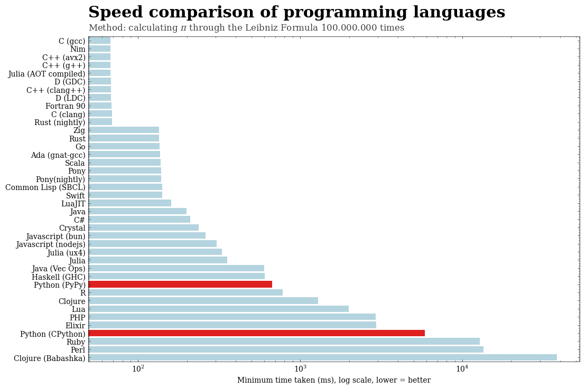
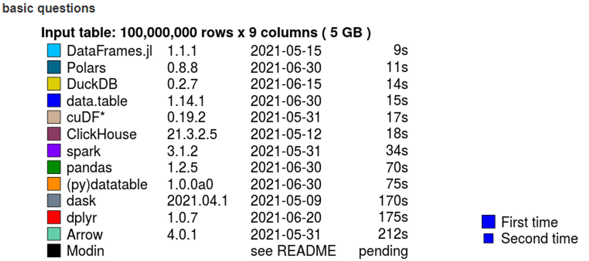
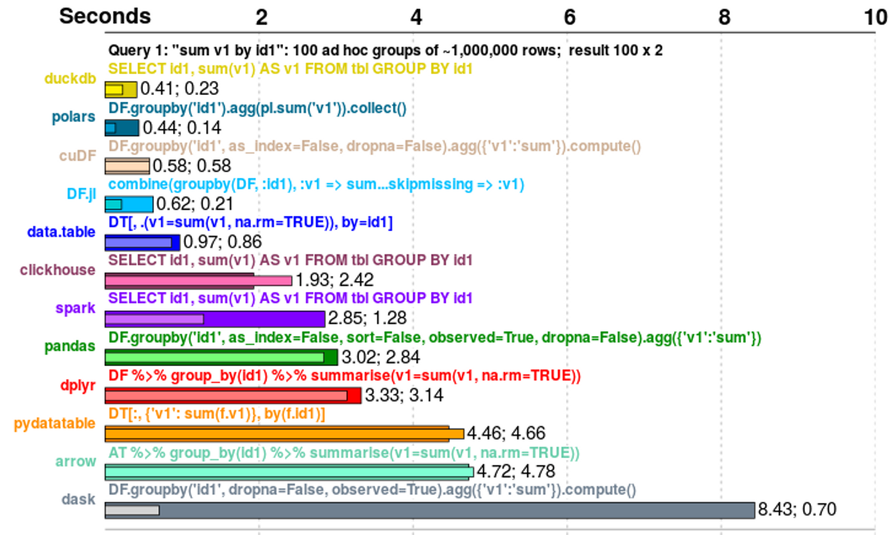
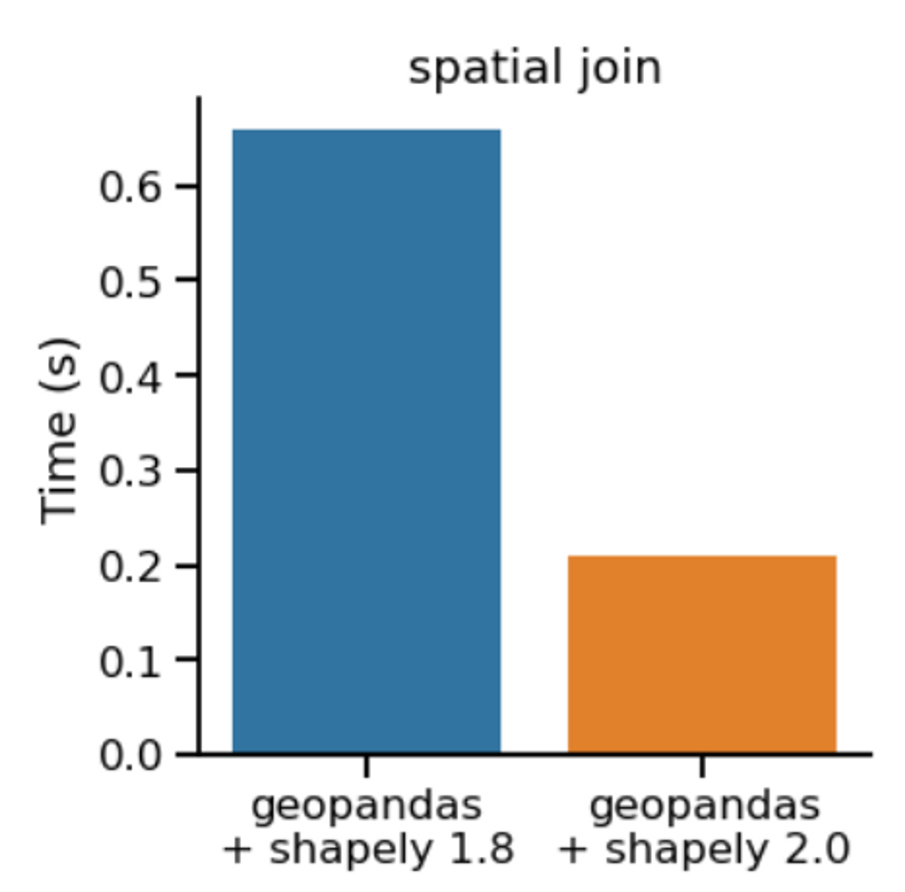
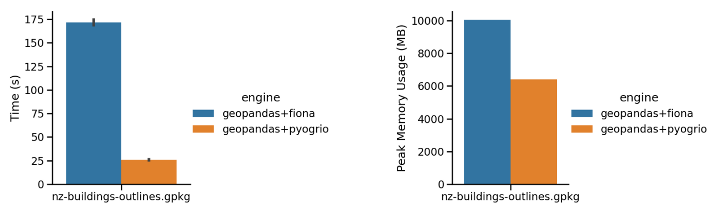
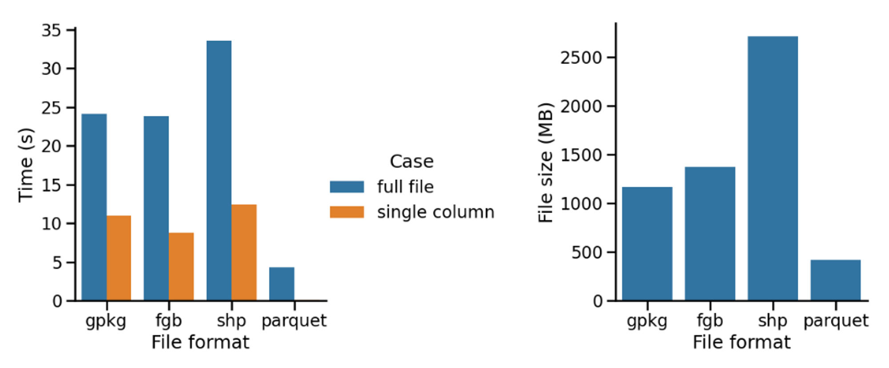
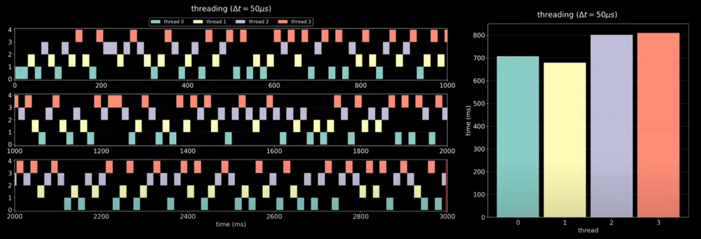
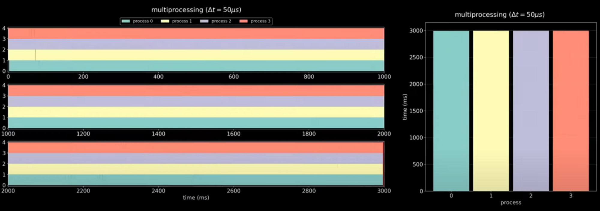

Summary
If you are using python, after a while you'll notice that your speed is "decreasing". Don't get me wrong, it is still more than capable to process thousands rows of data with no problem and no significant waiting time. The story changes after the data get more complicated and the size increases by 100x.
Realizing this, I immediately change my whole script to C.
No, of course not. After all, I got my own reasons to choose python as my first serious programming language (easy to understand is one of the top reasons. I'm dumb, and python facilitates dumb people to code).
This post recaps my data science project experience and how I tried alternatives to speed up my python script.
TL;DR this is what I've tried:
- Use a better (more suitable) file format
- Use faster packages/libraries
- Python multi-processing
- (Additional) Leverage big data capability
Disclaimer: this post only covers on speeding up the python script, i.e. the technical side. What I mean by this is, I'm sure there must be other non-technical practices that can speed up the workflow in general, such as a thorough planning, make sure to only use the necessary data and columns, etc.
How the story starts
I've been working on a relatively simple data science project for the past 2 months.
Imagine you have 2 datasets, each of them have their own id, let say customer_id and product_id. This data science project is basically ask to count how many unique product_id corresponds to each customer_id. If you are familiar with python, this whole project can be summed up in a one liner 🤷♂️.
invoice_table[["customer_id","product_id"]].groupby("customer_id").nunique()If only it is that simple.
It won't take months to work on and I probably won't create this post. There are at least 2 reasons why that is not the case:
- The dataset is humongous. One of the dataset contains 180 million records. The csv version of the data is about 27GB.
- It is geospatial data.
Remember this quote on the right? I wrote that.
Geospatial data by nature complicates the normal/tabular data, because it adds a geometry (basically a shape, point, line, or polygon) to the data—or rather, transform the data as geometry—and embed it into a coordinate reference system (lets you know where is the data located in our earth).
"The story changes after the data get more complicated and the size increases by 100x"
This is actually a good thing because it introduces the data to spatial operations.
But of course there's no free lunch (I'm starving btw, this is the last day of Ramadhan).
After writing the script equivalent to that one liner above, I run the process to estimate how long does it take.
There's actually 2 steps to get the desired result.
Before I do the one liner, I have to do a process called "spatial join". The spatial join and one liner turns out take about 4 second for each records. Sounds pretty quick right? WRONG!
I worked with 2 dataset, one of them is that 180 mil data (we will call this the "point data"). The other one is just ~400k records (this one is "polygon data"). The task requires me to do that 2 steps for each records in the second dataset. That means to complete the task, it will take me 400.000 x 4 seconds. That is ~1.600.000 seconds. That 4 second now have became 18 DAYS.
The Alternatives
There's no way I would wait for 18 days for the process to be finished. Why?
- If you think about it, this is a very simple problem. Just find how many unique point inside a polygon, why does it have to take 18 days to finish? This is unacceptable for me.
- It is impossible to push this kind of solution into production stage. In no world there's a client that would like to wait 18 days for a process to be finished.
So I tried some alternatives that I can think of. With the help of god, stackoverflow, and chatGPT, here's the recap of my findings (or at least some of it)…
Use Faster Libraries
🤦♂️ You don't say.
The problem is, this is not an intuitive solution for a novice data scientist like me. How would I know there's a "blazingly fast DataFrame library completely written in Rust, using the Apache Arrow memory model". (No, those are not my words, that is what you'll get if you google "polars dataframe").
Blazingly fast.
WTH 😆
But it really is Blazingly fast.
Since I'm working mostly on tabular data, I mainly use pandas for both data preprocessing and analysis. Turns out, there are many other alternatives to pandas, namely:
Out of those 6 mentioned, I've only tried spark a little and polars. This is the comparison of many pandas-like libraries.


Pandas is probably doing better now since
pandas 2.0 support arrow as it
dtype_backend and many other enhancement on the library.
Nowadays, this is how I do my preprocessing and analysis (especially when the data is huge)
-
Pandas.
I use pandas mainly for data exploration. Pandas is one of the first libraries I ever learn, hence my mindset is attached with pandas syntax when doing the exploration. -
Polars.
This is to accelerate the data preprocessing stage. After exploring with pandas, I got some idea what kind of preprocessing I need to do. I translate that idea into polars syntaxes.
And don't forget to use the libraries built-in optimization strategies. I'm not really sure if "built-in optimization strategies" is the correct terminology, but I'll give you an example of that.
Take GeoPandas as an example, the library has dependencies with other libraries such as shapely. There's also options of engine available to be used alongside GeoPandas such as fiona and pyogrio. In GeoPandas' case, what I mean by built-in optimization strategies is to upgrade shapely to version 2.0 and use pyogrio instead of fiona as its engine.


Better File Format 🗒️
Extending the previous part on optimization strategies, it also worth to try other data format, like parquet.

As a beginner, besides taught pandas as a main driver for data processing, I also got familiarized with csv file format. This makes sense because csv and excel file are easy to read and access. You only need a spreadsheet reader software, not even python is required at this point.
The entry gate of using python instead of a spreadsheet software is actually similar to transitioning from csv to parquet (or other more memory-efficient file formats), that is, data size.
After passing certain size of data, spreadsheet software's efficiency on handling the data is reduced. This case also true for csv files. This is where parquet come to the rescue.
The point data that is ~27GB as a csv file, now only ~2.5GB as a
parquet file, reduced by 90% 😱.
Takeaway: try other data format.
Data size is not the only benefit I got by converting from to parquet, if you see the left side of the graph above, the time take to read the file also reduced significantly.
Multi-processing or Multi-threading 🎶
I haven't really successfully tried out this alternative.
One of the main reason is that, I usually do all the data science stuff inside a jupyter notebook. And there is a know issue of running multi-processing on a jupyter notebook file, tl;dr it is not as straightforward.
One of the most straight forward solution is create a python file that replicate the steps in the jupyter notebook.
Another reason is that I'm not familiar with the concept of multi-processing and multi-threading, nor the practical side of it. My current attempt to run the script inside a python file haven't really come into fruition.
Conceptually, by default, python (or jupyter notebook) scripts only utilizes one core from our machine. Whereas, our machine usually have multiple cores. Of course we want to utilizes more than just one of them to speed up our processes.


You can see from the 2 graphs above, while not using multi-processing, the process only take place on one core at a time (the y axis in the left graph indicates the core number), that is why the graph seems patchy (many blank spots). While on the bottom one, all the cores are utilized simultaneously to execute the process.
Leverage Big Data Capabilities ⚡
This is somewhat an extension to the multi-processing strategy. When I say leverage big data capabilities, I simply mean to process the task in a multi-node or multi-cluster environment.
What is node?
What is cluster?
What environment am I talking about?
Trust me, I'm just as lost as you are lil bro 💀.
That is in brief using more computational power to execute the task. Hence I said it is somewhat an extension to the previous strat.
One thing I tried is to use apache-sedona. The initial result is promising, a 3x speed up compared to the utilized script!
Should I know this earlier, I probably spent more time exploring this library (╯°□°)╯︵ ┻━┻
I didn't put it in the "try faster library" strat because I think this one is a little bit different. Apache's product such as hadoop and spark are well known to be able to handle large-scale data processing due to its cluster computing. That is why I think this one have more depth rather than just using another library.
The end
My effort on reducing the estimated time to finish the process is somehow successful.
From 4 seconds per record to less than 1 second per record.
That is from 18 days to ~3 days of running a script.
I personally still can't accept this and still curious about how will it be if I successfully apply the 3rd and/or 4th strategy.
But I'll take this little victory ¯\(ツ)/¯.
I'll write an update on my journey to find the fastest solution. Later!
Sources
[1]:Programming Language Speed Comparison
[2]:Database-like ops benchmark